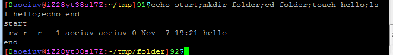
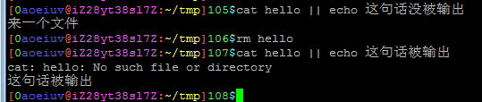
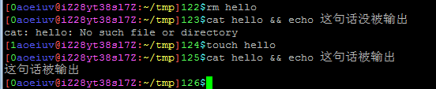
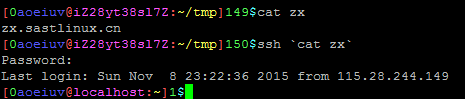

另外几种一行多个命令的方法，前面说的管道，就是一种方法，echo hello|wall，虽然这不是简单执行那两个命令，不管怎样，这里确实是执行了echo 和wall两个命令，下面讲些其他能执行多个命令的方法。
;，分号隔开，这是最基本的，就是简单的执行完前者再执行后者，几条命令之间没有任何联系。

||,&&，两种逻辑运算符，用来连接几个命令，逻辑运算是用来算真(true)假(false)之间的关系，在Shell里，命令的返回值都是数字，0表示执行成功，表示逻辑真，其他数字都代表执行失败，逻辑假。
||，或运算，左右两条命令有一条执行成功就返回真，如果前者执行成功，就不执行后者，因为已经可以返回真了。

&&，两者都是与运算，左右两条命令都执行成功才返回真，如果前者执行失败，就不执行后者，因为已经可以返回假了。

``，把别的命令的返回值作为命令的一部分，这个符号是反单引号，键盘上的tab键上方那个键，不是单引号，因为有点难看，所以通常用$()，效果一样。
